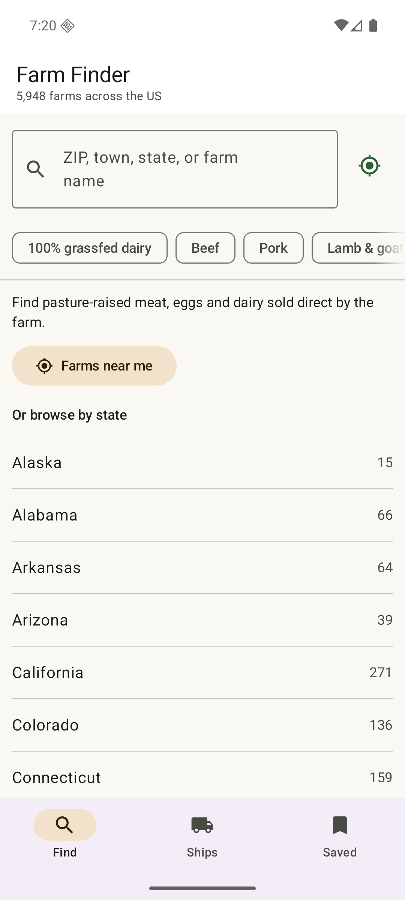
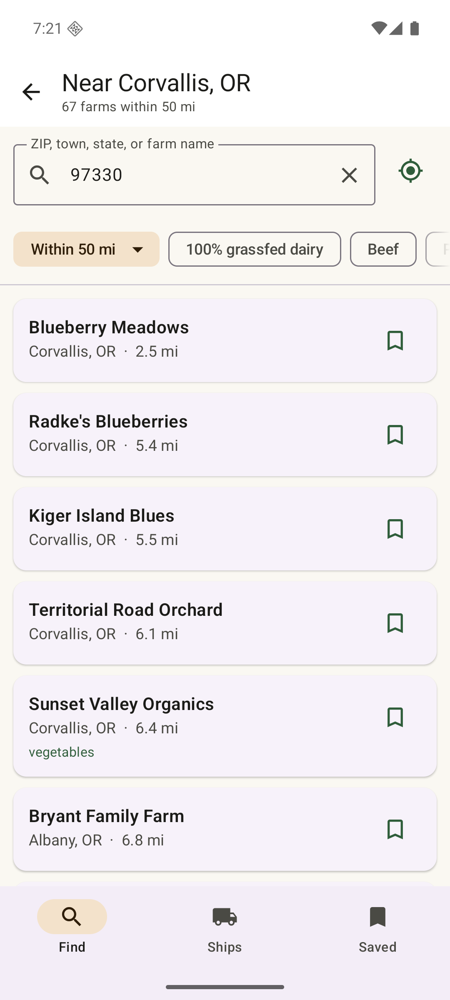
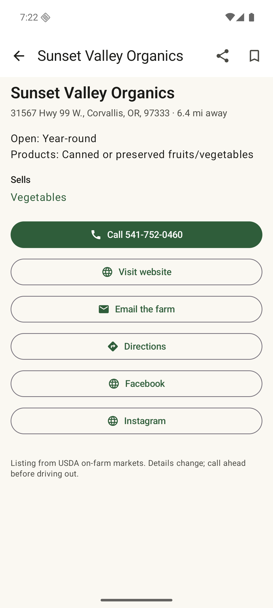
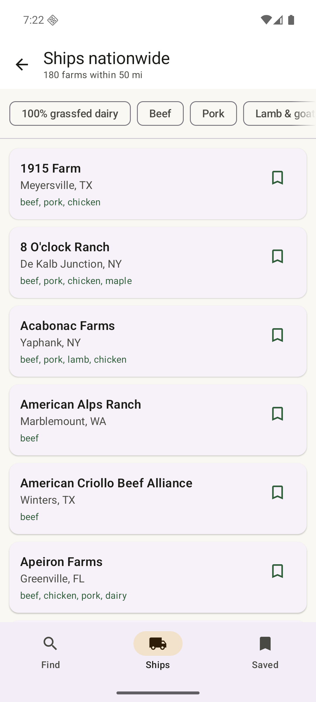

Search nearby
Use your approximate location or enter any ZIP code or town. Adjust the radius from 10 to 250 miles.
Nearly 6,000 farms across the US
Find farms selling pasture-raised meat, eggs, dairy, produce, and more directly to the public—without an account or an internet connection.

From field to table
Farm Finder puts thousands of direct-to-public farms in your pocket, with flexible search that works wherever the road takes you.
Use your approximate location or enter any ZIP code or town. Adjust the radius from 10 to 250 miles.
Look for Wagyu, beef, pork, poultry, eggs, dairy, produce, honey, and more with a compact product picker.
Browse farms that ship direct, then save the ones you want to revisit. Your favorites stay on your device.
Built for privacy
Every farm listing is bundled inside the app. Searches happen on your phone, not on a server.
Simple by design



Free on Android
Download Farm Finder and discover the farms feeding communities across the country.